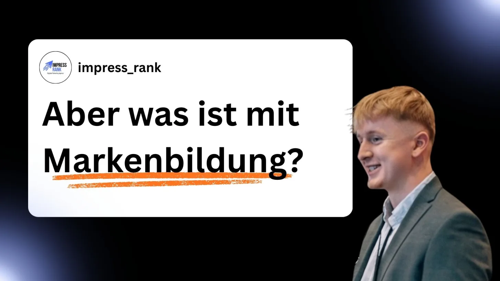

Hi,
John hier,
jeder spricht über Markenbildung, wahrscheinlich hast du es im Studium mal gehört, oder deine Cousine die „alllles“ über Marketing weiß, hat es dir erzählt.
„Du brauchst was mit Social Media“, musst als Chef den nächsten TikTok Trend mitmachen, oder brauchst ein Werbevideo, was cool und lustig ist.
Wozu aber? Naja ist doch logisch, Markenbildung.
Coca-Cola oder Edeka machen schließlich auch nichts anderes.
Sie müssen deinen Namen kennen, dein Logo sehen, auf Instagram deine Slogans liken.
Doch hier ist die Realität.
Als mittelständisches Unternehmen hast du nicht das Budget, was Coca-Cola oder Edeka haben.
Alles was du investierst, sollte auch in irgendeiner Form zurückkommen.
Wenn du 1 Euro in Werbung investierst, sollten idealerweise 2 Euro daraus werden.
Klingt einfach? Ist es auch.
Du willst mit deiner Werbung genau die Leute ansprechen, die am Ende bei dir kaufen.
Wenn du also anfängst, lustige Videos zu machen oder dir coole Slogans überlegst,
wird das deine Leute nicht zum Kauf führen.
Wenn du die Zielgruppe nicht richtig ansprichst,
war alles umsonst.
Doch dafür haben viele Werbeagenturen diese Sache namens „Markenbildung“ eingeführt.
Eine gescheiterte Werbekampagne? Ach egal, Leute haben deine Marke gesehen.
Ein Werbevideo, was die Interessen deiner Zielgruppe nicht weckt? Ach egal, wir haben ein cooles Video.
Deswegen ist der Grundbaustein guten Marketings zu wissen, was ein potenzieller Interessent hören will.
Und dann kann man Werbung auf Social Media schalten, im Prinzip zahlt man dann die Plattformen, es deiner Zielgruppe anzuzeigen.
So wird aus 1 Euro = 2 Euro,
und das ganze ist planbar und skalierbar.
So funktioniert Neukundengewinnung am Fließband.
Wie du das jetzt bekommst?
Oder ob das was für dich ist?
Dafür analysiere ich kostenlos deine Zielgruppe, und überlege, mit welchen Methoden du sie am besten erreichst.
Ob du das dann selber umsetzt, oder ich das übernehme, besprechen wir in einem gemeinsamen Erstgespräch.
Sichere es dir jetzt hier https://impress-rank.de/anfrage
Bis bald,
John.
Kostenloses Erstgespräch
Du möchtest wissen, wie du mehr Neukunden gewinnst? Im kostenlosen Erstgespräch schauen wir gemeinsam, wo du stehst.
Kostenloses Erstgespräch anfragen